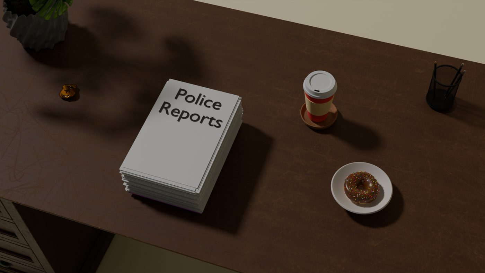

3D Rendering & OpenGL
Two kinds of graphics work from CPIT-285: 3D scenes modeled and rendered in Blender, and a 2D scene written entirely in code with OpenGL.
Donut scene (Blender )
A desk scene with a stack of police reports, a coffee cup, a pen holder and a donut on a plate, rendered at 1920×1080.

3D animation (Blender)
A 30-second rendered animation of a carved wooden rocking horse on a dresser.
Harbor scene (Python + OpenGL)
A 2D city-by-the-sea scene drawn from coordinates with PyOpenGL and GLUT: buildings with windows, water and a sailboat. The scene is interactive:
- Press L or R to move the boat left or right.
- Right-click to open a menu that changes the sky color (black, yellow or the original) or exits.
Everything is built from basic shapes placed with an orthographic 2D coordinate system.